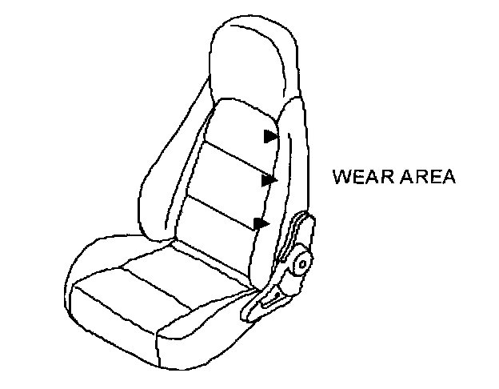
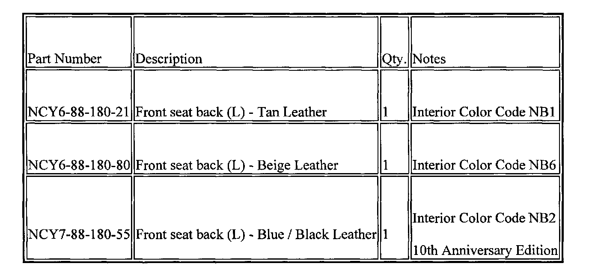
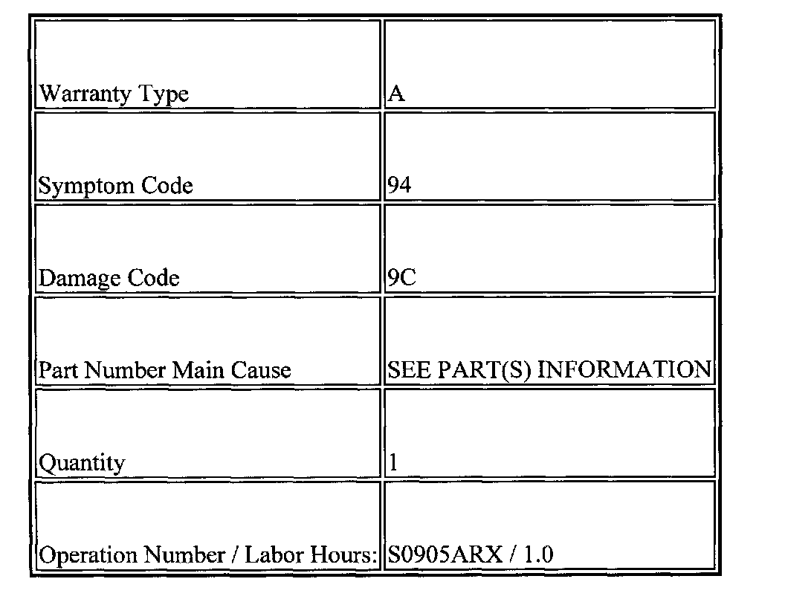

Interior - Abnormal Driver Side Seat Back Cover Wear
Body and Accessories09-011/03
1999-2000 Miata - LEATHER SEAT TRIM DAMAGE
Note:
This bulletin supersedes the following TSB(s): 09-016/99. Please update your records accordingly.
BULLETIN NOTE
This bulletin supercedes 09-016/99. This bulletin is being reissued 9-8-2003, the PARTS INFORMATION has been revised as of 11-14-2003.
APPLICABLE MODEL(S)/VINS
1999-2000 Miata with leather seating
DESCRIPTION

On some vehicles equipped with leather seats, the surface on the left side support of the driver's seat back may wear off. This wear may be caused by the shape of the seat frame being too sharp at the side support area causing excessive pressure to be applied to the support while the driver enters and exits the vehicle. To correct this concern, the frame of the driver's side front scat back will be modified starting with 2001 model year.
Customers having this concern should have their vehicle repaired using the following procedure.
REPAIR PROCEDURE
1. Verify customer concern.
2. Replace the driver's side front seat back with a modified part.
3. Verify repair.

PART(S) INFORMATION

WARRANTY INFORMATION
NOTE:
This information applies to verified customer complaints on vehicles covered under normal warranty. Refer to the SRT microfiche for warranty term information.